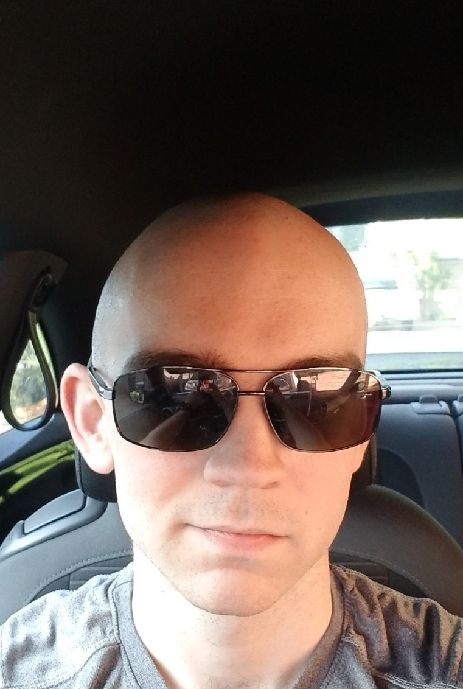

My name is Blake Mangen. I currently live in Tucson, Arizona. I have lived in Tucson for 22 years. I have been working with computers and troubleshooting basic computer issues for 3 years now. I currently work in the United States Air Force as a Public Health Technician (Been working in the military for almost 4 years). Among my duties I am also an ISSO (Information Systems Security Officer). I have a Sec + certification and currently working on more. I enjoy to be a busy bee and keep the grind up.
My favorite thing to do is go to the gym and lift weights. I find that lifitng and giving yourself a good workout helps relieve stress. I enjoy to golf, however I am not the best at it. The place I want to visit the most right now is Japan then Germany. I am also huge into mythology and find the concept of it as very intriguing to me. I play video games and find that it has influenced my taste in music, that being instrumental. instrumental music just lets you create the setting your in and lets yourself get lost away.